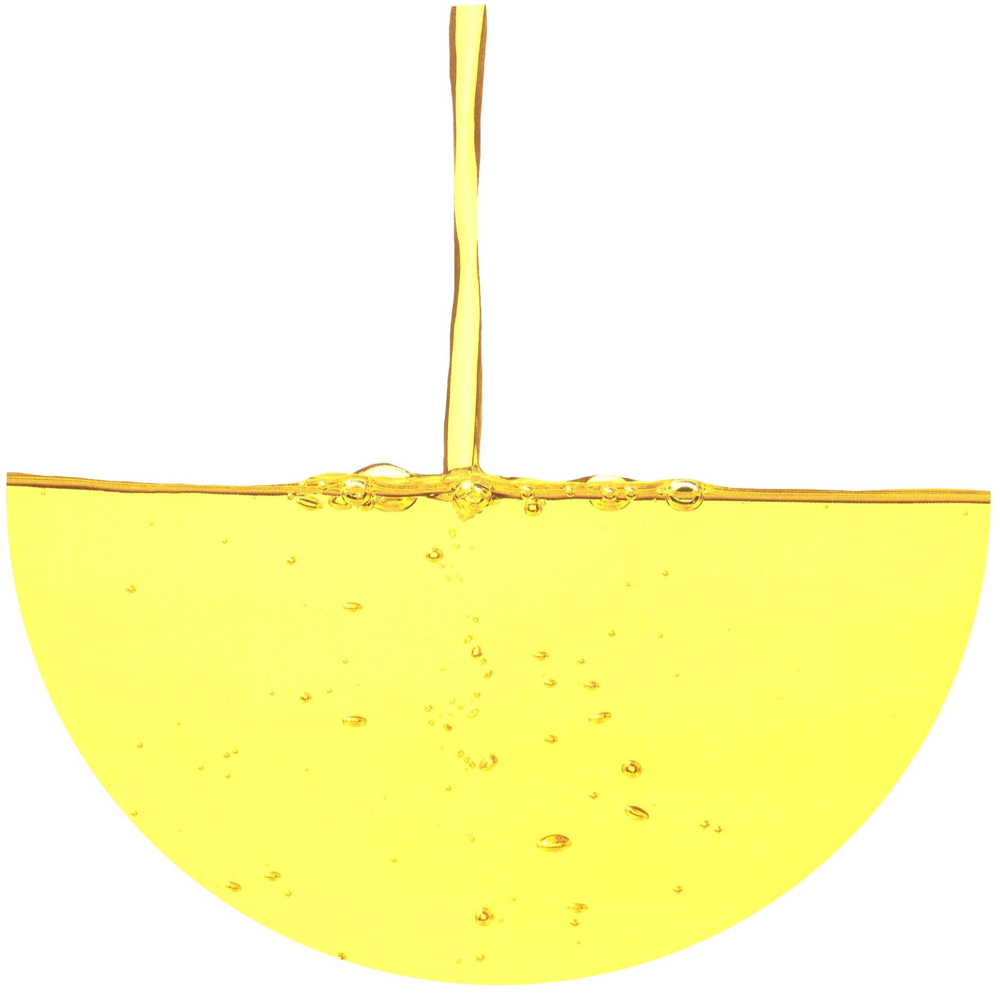

Diacetyl

431-03-8
Synonyms or siblings
2,3-butanedione, Biacetyl, Dimethyl diketone, 2,3-diketobutane, Butanedione
Funtion
Appeal - Flavor
Description
Diacetyl, also known as 2,3-Butanedione, is a flavorant that smells like butter and is used in artificial butter and vanilla flavorings. Despite its pleasant associations, concentrated diacetyl has a foul odor. It's produced from natural gas and methyl ethyl ketone (MEK) and is often mixed with other chemicals for a butter-like flavor.
다양한 이름
디아세틸, 바이아세틸, 뷰타네다이온, 2,3-뷰타네다이온
기능
감미료
설명
다이아세틸은 포도당의 발효로부터 유도되는 성분으로, 진한 버터 향이 나는 노란색 액체이다. 커티지 치즈(cottage cheese), 요구르트, 버터, 크림 등 유제품의 향기 성분으로 널리 사용되며, 전자레인지에 돌리는 팝콘, 맥주, 커피 등에도 첨가된다. 하지만 다이아세틸은 폐렴, 고혈압, 알츠하이머 등 인체에 해로운 영향을 줄 수 있는 위험물질의 '최우선 순위'로 분류되어 있으므로 섭취에 유의해야 한다.